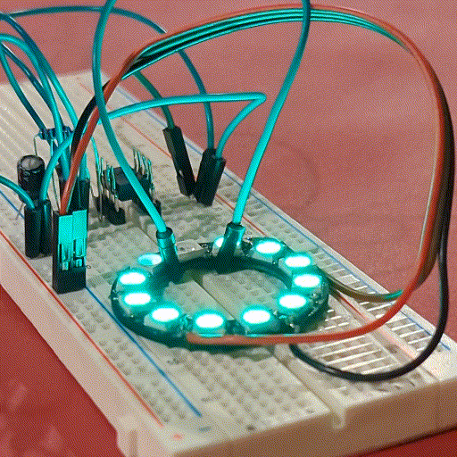

You’ve reached my personal ePortfolio. Take a look around, and you can understand my skills, interests and a selection of some of my favorite projects.
If it has less storage than a floppy disk, I’m at home.
ffmpeg,
imagemagick, and a whole bunch of Linux stuff.Here’s a few projects I’m proud of:
Project Tracer: Low-cost, privacy-preserving contact tracing for the masses.
ATTiny555: A drop-in replacement for a 555 timer made out of an ATTiny85, because I could. It was featured on Hackaday, Hackster.io, and the Hackaday Podcast (20:11)

Mini QOI: A streaming, statically allocated QOI decoder for embedded systems with very little RAM.
I’m currently working on a 1 kilowatt eBike ESC, but that’s still a work-in-progress.
Through GT’s study abroad program, I plan on studying overseas during the summer of my second year at Georgia Tech. I have to:
I want to gain valuable work experience at a semiconductor manufacturer, as I feel that I lack workplace experience. I have to:
I want to launch a product, whether it be a sunrise lamp or custom e-bike. This one is nebulous, but if you read my bio there’s plenty of things I’m passionate about that I can pursue. I want to create something that makes the world better.